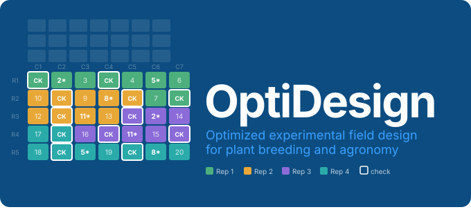

Overview
OptiDesign provides advanced tools for constructing optimized experimental field designs for plant breeding and agronomic experiments. It integrates:
- field layout construction
- genetic structure (family, pedigree, genomic relationships)
- optional spatial dispersion optimization
- optional mixed-model efficiency evaluation
into a single, flexible workflow.
Why OptiDesign?
In many breeding programs, experimental design is treated as a purely logistical step. However, design choices strongly affect:
- precision of treatment estimates
- genomic prediction accuracy
- ability to separate genetic from environmental effects
- robustness to field spatial heterogeneity
OptiDesign allows users to explicitly control these aspects at the design stage, rather than correcting them post hoc during analysis.
Core Design Concepts
OptiDesign is built around three key ideas.
1. Field realism
Designs reflect how trials are actually implemented in the field:
- fixed grid layouts (
n_rows × n_cols) - field-book ordering and serpentine movement
- contiguous replicate structure
- unused cells placed at the end of the field stream
2. Genetic awareness
Entries can be arranged based on known genetic structure:
- family labels
- pedigree relationships (A matrix)
- genomic relationships (GRM)
This enables reduction of local genetic relatedness, improved sampling of genetic diversity across spatial blocks, and better estimation of genetic effects.
Main Functions
prep_famoptg()
Constructs repeated-check block designs with flexible replication, covering augmented designs, partially replicated (p-rep) designs, and RCBD-type repeated-check designs. Checks appear in every block; entries may be replicated, partially replicated, or unreplicated.
Use this function when:
- you have many entries but limited field resources
- checks must appear in every block
- you need a flexible framework covering augmented, p-rep, or balanced layouts
- you are working in early- or intermediate-stage breeding trials
Key capabilities:
| Feature | Details |
|---|---|
| Replication | Flexible per-entry replication |
| Block allocation | No treatment repeats within a block |
| Design types | Augmented, p-rep, balanced repeated-check |
| Grouping | Family labels, GRM, or pedigree (A) matrix |
| Dispersion optimization | Optional; reduces clustering of related entries |
| Efficiency diagnostics | Optional; mixed-model based evaluation |
Key design rule: a treatment can appear multiple times overall, but at most once per block.
alpha_rc_stream()
Constructs alpha row–column designs on a fixed grid using a stream-based layout. The field is converted into a single ordered stream of positions, split into contiguous replicate segments, then further divided into incomplete blocks.
Use this function when:
- field dimensions are fixed and cannot change
- planting follows field-book order
- replicates are defined operationally rather than geometrically
- checks must appear in every incomplete block
- classical rectangular alpha designs are not practical
Key capabilities:
| Feature | Details |
|---|---|
| Grid | Fixed n_rows × n_cols
|
| Replicates | Contiguous field segments |
| Block sizes | Unequal incomplete blocks supported |
| Checks | Present in every block |
| Grouping | Family labels, GRM, or pedigree (A) matrix |
| Dispersion optimization | Optional |
| Efficiency diagnostics | Optional |
Important: unused cells are placed only at the end of the field stream, not scattered, which is critical for practical field implementation.
Grouping Options
Both functions support three grouping strategies:
| Strategy | Source | Best for |
|---|---|---|
| Family-based | User-defined labels | Simple, interpretable grouping |
| GRM-based | Genomic similarity matrix | Captures real genomic relationships |
| Pedigree-based | A matrix | When genomic data is unavailable |
Dispersion Optimization
An optional step that improves the spatial distribution of genetically related entries across the field. Use it when:
- genomic or pedigree structure matters
- strong local spatial correlation is expected
- you want to avoid confounding spatial and genetic effects
Efficiency Evaluation
An optional diagnostic step that evaluates a candidate design under a mixed-model framework before it is implemented. Useful for:
- comparing alternative designs
- studying the impact of block structure and replication level
- optimizing design parameters for a specific trial objective
Supported models include fixed-effect precision (BLUEs), random-effect prediction (BLUP / GBLUP / PBLUP), and spatial structures (AR1, AR1×AR1).
Installation
Install from GitHub with vignettes (recommended):
install.packages("remotes")
remotes::install_github("FAkohoue/OptiDesign",
build_vignettes = TRUE,
dependencies = TRUE
)Install without vignettes for a faster install:
remotes::install_github("FAkohoue/OptiDesign",
build_vignettes = FALSE,
dependencies = TRUE
)Documentation
Full documentation, function reference, and tutorials are available at:
https://FAkohoue.github.io/OptiDesign/
To read the vignette after installation:
vignette("OptiDesign-introduction", package = "OptiDesign")Citation
If you use OptiDesign in published research, please cite:
Akohoue, F. (2026).
OptiDesign: Experimental Field Design Utilities for Optimized Layout
Construction. R package version 0.1.0.
https://github.com/FAkohoue/OptiDesignContributing
Issues, bug reports, and feature suggestions are welcome: https://github.com/FAkohoue/OptiDesign/issues